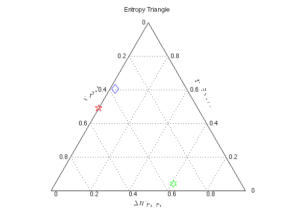
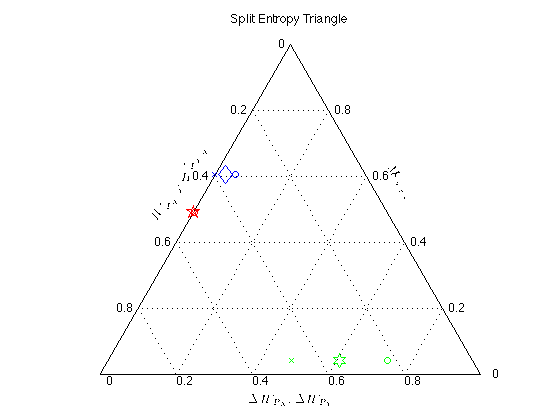
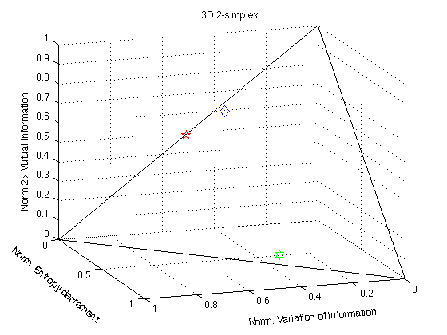

Contents
- Two information-theoretic tools to assess the performance of multi-class classifiers
- Data examples
- The entropy triangle (de Finetti entropy diagram) from rawcount contingency matrices (or confusion matrices)
- The 2-simplex in a three-dimensional diagram from rawcount contingency matrices (or confusion matrices)
- The entropy triangle (de Finetti entropy diagram) from joint distributions
- The 2-simplex in a three-dimensional diagram from joint distributions
Two information-theoretic tools to assess the performance of multi-class classifiers
Entropy_triangle is a function that implements two tools to analyze the behavior of multiple-class, or multi-class, classifiers by means of entropic measures on their confusion matrix or contingency table. First we obtain a balance equation on the entropies that captures interesting properties of the classifier. Second, by normalizing this balance equation we first obtain a 2-simplex in a three-dimensional entropy space and then the de Finetti entropy diagram or entropy triangle.
A full description can be found in:
Valverde-Albacete, F. and Peláez-Moreno, C. Two information-theoretic tools to assess the performance of multi-class classifiers. Pattern Recognition Letters (2010) vol. 31 (12) pp. 1665-1671
Examples for the two tools are given below.
clc clear all close all
Data examples
Examples a, b and c (from Sindhwani, V., Rakshit, S., Deodhare, D., Erdogmus, D., Principe, J., Niyogi, P., 2004. Feature selection in MLPs and SVMs based on maximum output information. IEEE Trans. Neural Networks 15 (4), pp. 937-948.)
a=uint16([
15 0 5
0 15 5
0 0 20]);
Cxy{1} = a;
b=uint16([
16 2 2
2 16 2
1 1 18]);
Cxy{2} = b;
c=uint16([
1 0 4
0 1 4
1 1 48]);
Cxy{3} = c;
The entropy triangle (de Finetti entropy diagram) from rawcount contingency matrices (or confusion matrices)
%%Different symbols for the aggregated view: colours=['b','r','g','m','c','k']; shapes=['d','p','h','o','s','x','*']; [h,H_Pxy, H_Px,H_Py, MI_Pxy]=entropy_triangle(Cxy{1},'color',colours(1),'linestyle',shapes(1)); title('Entropy Triangle') [g,H_Pxy, H_Px,H_Py, MI_Pxy]=entropy_triangle(Cxy{1},'split', 'color',colours(1),'linestyle',shapes(1)); title('Split Entropy Triangle') for i=2:3 [h,H_Pxy, H_Px,H_Py, MI_Pxy]=entropy_triangle(Cxy{i},'incremental',h,'color',colours(i),'linestyle',shapes(i)); [g,H_Pxy, H_Px,H_Py, MI_Pxy]=entropy_triangle(Cxy{i},'incremental',g, 'split','color',colours(i),'linestyle',shapes(i)); end 
The 2-simplex in a three-dimensional diagram from rawcount contingency matrices (or confusion matrices)
%%Different symbols for the aggregated view: colours=['b','r','g','m','c','k']; shapes=['d','p','h','o','s','x','*']; [h,H_Pxy, H_Px,H_Py, MI_Pxy]=entropy_triangle(Cxy{1},'3D','color',colours(1),'linestyle',shapes(1)); title('3D 2-simplex') for i=2:3 [h,H_Pxy, H_Px,H_Py, MI_Pxy]=entropy_triangle(Cxy{i},'incremental',h,'3D','color',colours(i),'linestyle',shapes(i)); end
The entropy triangle (de Finetti entropy diagram) from joint distributions
% Obtain joint distributions from rawcount contingency or confusion matrices for i=1:3 [Ixy,Pxy{i},MI,Hxy] = pmi(Cxy{i}); end [h,H_Pxy, H_Px,H_Py, MI_Pxy]=entropy_triangle(Pxy{1},'color',colours(1),'linestyle',shapes(1)); title('Entropy Triangle') [g,H_Pxy, H_Px,H_Py, MI_Pxy]=entropy_triangle(Pxy{1},'split', 'color',colours(1),'linestyle',shapes(1)); title('Split Entropy Triangle') for i=2:3 [h,H_Pxy, H_Px,H_Py, MI_Pxy]=entropy_triangle(Pxy{i},'incremental',h,'color',colours(i),'linestyle',shapes(i)); title('Entropy Triangle') [g,H_Pxy, H_Px,H_Py, MI_Pxy]=entropy_triangle(Pxy{i},'incremental',g,'split', 'color',colours(i),'linestyle',shapes(i)); title('Split Entropy Triangle') end
The 2-simplex in a three-dimensional diagram from joint distributions
% Obtain joint distributions from rawcount contingency or confusion matrices for i=1:3 [Ixy,Pxy{i},MI,Hxy] = pmi(Cxy{i}); end [h,H_Pxy, H_Px,H_Py, MI_Pxy]=entropy_triangle(Pxy{1},'3D','color',colours(1),'linestyle',shapes(1)); title('3D 2-simplex') for i=2:3 [h,H_Pxy, H_Px,H_Py, MI_Pxy]=entropy_triangle(Pxy{i},'incremental',h,'3D','color',colours(i),'linestyle',shapes(i)); end